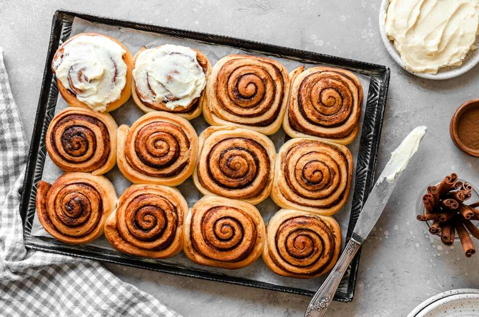

Cinnamon Rolls

Description
I make these the night before and bake them in the morning. My family and friends can't stay out of them. They are very moist and decadently rich.
Ingredients
- 1 cup milk
- ½ cup butter
- 1 cup water
- 1 tablespoon active dry yeast
- 1 cup white sugar
- 1 teaspoon salt
- 2 eggs
- 6 cups all-purpose flour
- 2 teaspoons ground cinnamon
- 2 cups dark brown sugar
- ½ cup butter
- 2 cups confectioners' sugar
- 1 (3 ounce) package cream cheese
- 1 tablespoon butter
- ½ teaspoon vanilla extract
- 3 tablespoons milk
Steps
- Warm the milk in a small saucepan until it bubbles, then remove from heat. Mix in the butter; stir until melted. Add water and let cool until lukewarm.
- In a large bowl, combine the milk mixture, yeast, white sugar, salt, eggs and 2 cups flour; stir well to combine. Stir in the remaining flour, 1/2 cup at a time, beating well after each addition. When the dough has pulled together, turn it out onto a lightly floured surface and knead until smooth and elastic, about 8 minutes.
- Divide dough into two pieces. Roll each piece into a 12x9 inch rectangle. In a bowl, stir together the cinnamon and brown sugar. Spread each piece with half of the butter, half of the brown sugar and cinnamon mixture. Roll up dough, using a little water to seal the seam.
- Cut each roll into 12 slices using a very sharp knife or dental floss. Place rolls onto two 9x13 inch greased baking pans. Cover and let rise until almost doubled, about 1 hour. Meanwhile, preheat oven to 375 degrees F (190 degrees C).
- Bake in preheated oven for 20 to 25 minutes until golden brown.
- To make frosting; combine confectioner's sugar, cream cheese, butter and vanilla. Add milk gradually until frosting reaches a spreading consistency. Spread over warm (but not hot) cinnamon rolls.
Back to main page